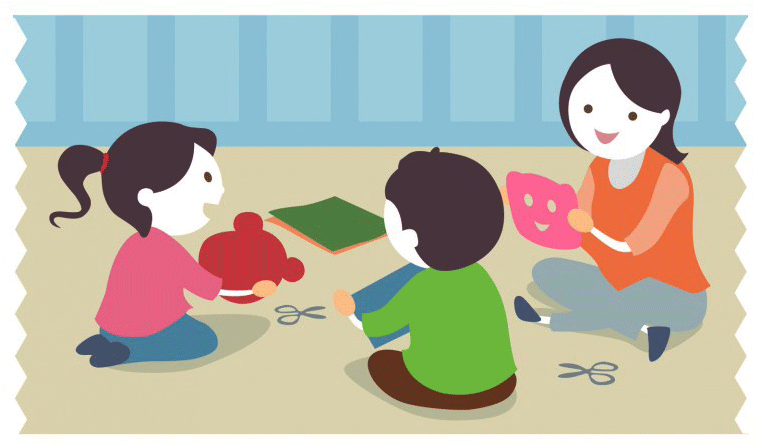

Hablar de familia en la actualidad nos lleva a hablar de diversidad. Más allá del casi obligado plural con que debemos referirnos a la institución familiar, es cierto que las definiciones de familia por más variadas que sean descansan hoy en la relación interindividual, dando la idea de que la familia es ante todo un proyecto relacional que no hace referencia necesariamente a lazos de sangre. Precisamente la naturaleza de las relaciones interpersonales son el factor clave del desarrollo del niño en la familia, más incluso que la propia estructura familiar. Esto es precisamente lo que queremos rescatar en nuestra intervención: la naturaleza de la relación interpersonal como factor clave del desarrollo del niño en la familia. La familia sigue siendo, a pesar de los ataques y dudas que se ciernen sobre ella, el nudo esencial de la constitución de la personalidad de los niños. Prácticamente todas las definiciones, más allá desde el cual se posicionen para estudiar a la familia, hacen referencia a los factores comunes: habitación común, descendencia común, mismo techo, mismo apellido, mismos padres, mismo grupo, misma historia. Desde esta perspectiva, la familia aparece como el mejor contexto para acompañar a la persona para transitar los cambios que implica necesariamente la vida
Las familias acompañan la evolución de los niños, en el proceso de escolarización, que es la vía excelente para ir penetrando en otros ámbitos sociales diferentes a la familia. Esta, a través de estas funciones apunta a educar a los niños para que puedan ser autónomos, emocionalmente equilibrados, capaces de establecer vínculos afectivos satisfactorios. En esta intervención haremos expresa referencia a la que anotamos como segunda función básica de la familia, esto es, la función socializadora, que conecta al niño con los valores socialmente aceptados. La enculturación como así ha dado en llamarse consiste en la transmisión de representaciones y valores colectivos, indispensables para el desarrollo y la evolución de los niños. Partimos de que los valores, las reglas, los ritos familiares están al servicio de la estabilidad familiar, funcionan como sello de identidad para las distintas familias, están al servicio del sentido de pertenencia. Por otro lado, existen fuerzas internas y externas, como el proceso evolutivo de los miembros de una familia, los conflictos, las 3 crisis que funcionan como agentes de cambio. Del equilibrio entre ambas fuerzas resultará el sano crecimiento de la familia.